A reproducible NLP study classifying 49,582 movie reviews as positive or negative — and investigating where, and why, traditional machine learning succeeds and fails.
The IMDB Dataset of 50K Movie Reviews provides a balanced benchmark for binary sentiment classification. Download from Kaggle ↗ and place at data/raw/IMDB Dataset.csv. Detailed instructions live in data/README.md.
A four-stage pipeline transforms raw reviews into a feature-rich, analysis-ready dataset.
The raw IMDB CSV is ingested via 01_load_data.py. We establish a baseline dataframe of 50,000 observations, verify structural integrity, and confirm the perfectly balanced class distribution.
We verify total absence of missing values, flag duplicate entries, and confirm the 50/50 split — validating data integrity before any transformation.
02_preprocess_data.py executes the core normalization sequence:
The engineered dataframe (49,582 rows × 8 columns) is exported to data/processed/cleaned_data_set.csv — ready for EDA and modeling.
Three focused questions drive the analytical direction. Each one has its own dedicated page with methodology, experiments, results, and interpretation.
Evaluates whether simple, interpretable models are sufficient for binary sentiment classification, and whether their decisions can be traced back to specific words — a requirement for trust in any automated quality-control system.
View RQ 1 in detail →Tests the common intuition that dissatisfied viewers write more exhaustive reviews. Investigates whether review length carries useful predictive signal or whether large sample sizes can manufacture statistical significance without practical meaning.
View RQ 2 in detail →Systematic error analysis examining False Positives and Negatives across review length, vocabulary rarity, and emotional ambiguity to identify performance-degrading patterns in the best classifier.
View RQ 3 in detail →All figures on this page are produced by 03_basic_eda.py and saved to visuals/figures/. Tables come from visuals/tables/. No screenshots — every image regenerates from a script.
| Statistic | word_count | avg_word_length | exclamation_count | all_caps_count | lexical_diversity |
|---|---|---|---|---|---|
| Count | 49,582 | 49,582 | 49,582 | 49,582 | 49,582 |
| Mean | 229.06 | 4.31 | 0.98 | 1.72 | 0.645 |
| Std Dev | 169.79 | 0.30 | 2.92 | 4.11 | 0.094 |
| Min | 4 | 3.04 | 0 | 0 | 0.042 |
| Median | 172 | 4.29 | 0 | 1 | 0.645 |
| Max | 2,459 | 12.24 | 282 | 154 | 1.000 |
| Sentiment | word_count | avg_word_length | exclamation_count | all_caps_count | lexical_diversity |
|---|---|---|---|---|---|
| Negative (0) | 227.24 | 4.28 | 1.03 | 1.88 | 0.647 |
| Positive (1) | 230.86 | 4.34 | 0.93 | 1.56 | 0.642 |
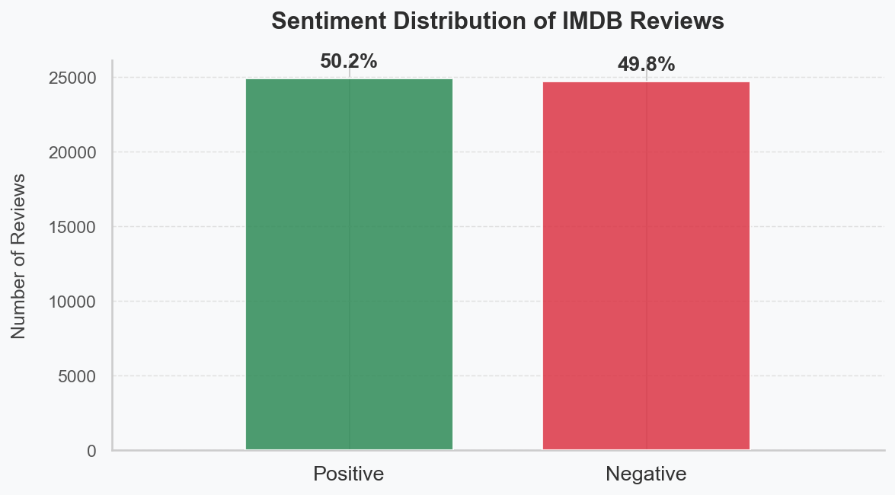
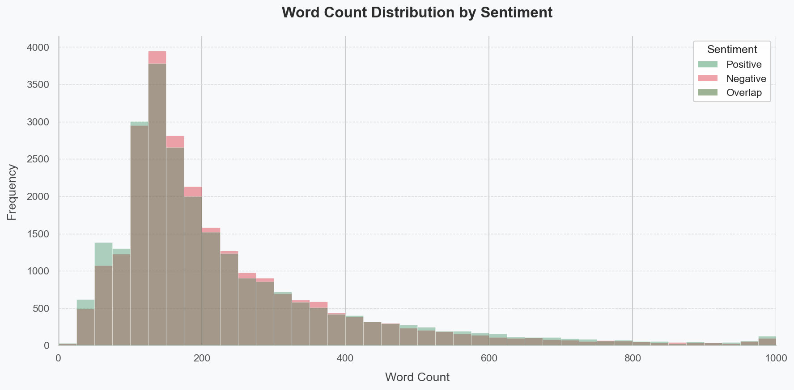
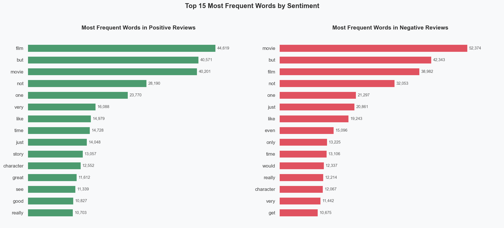
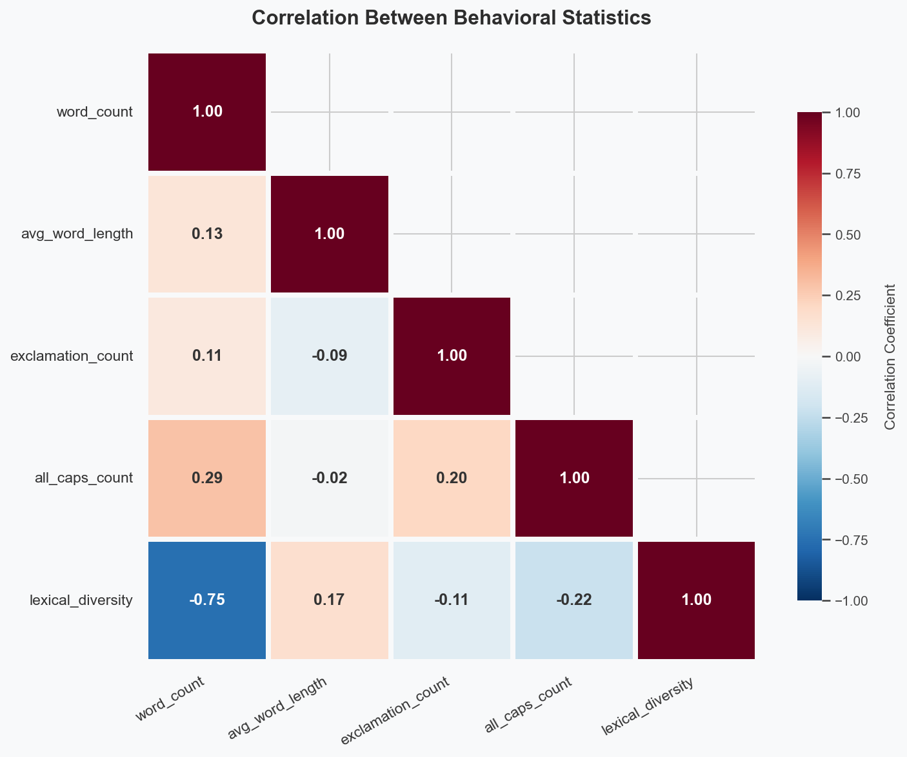
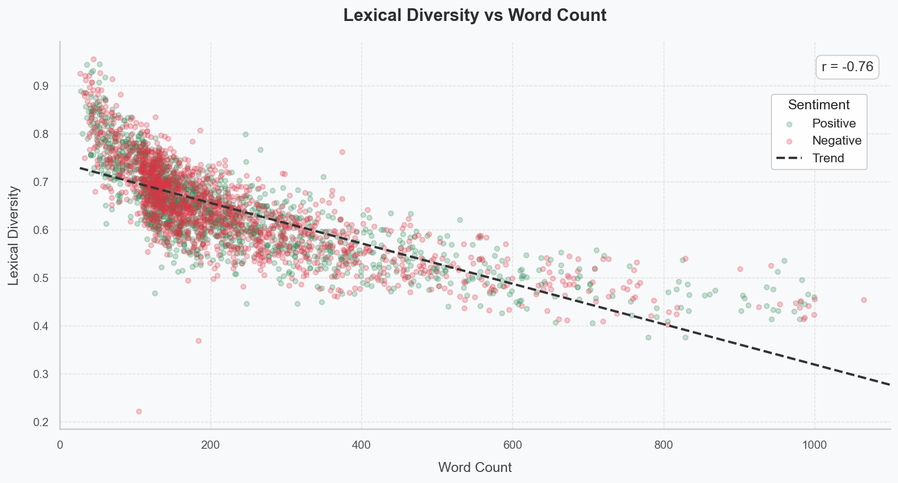
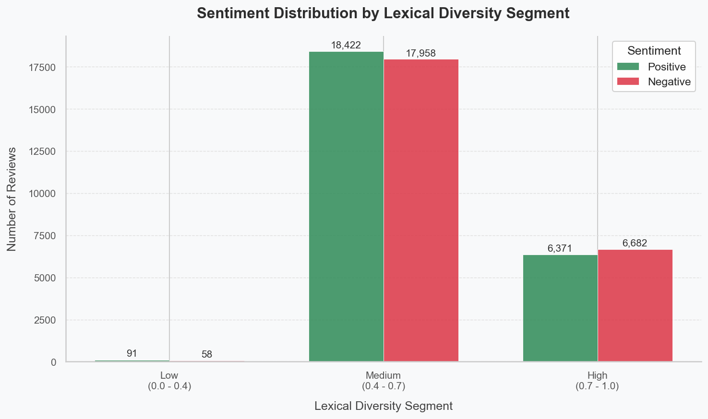
Can traditional machine learning algorithms reliably and interpretably classify sentiment to support first-stage quality control in customer feedback loops?
We split the cleaned dataset 80/20 with stratified sampling and a fixed random seed (random_state=42) for full reproducibility. Text is represented two ways for comparison: TF-IDF and Bag-of-Words, both with unigram + bigram features, min_df=5, and max_features=20000. Four models are evaluated:
Always predicts the most frequent class. Anything that does not beat this is useless.
Linear, probabilistic, and fully interpretable. Coefficients directly map to the importance of each word.
Classical text-classification baseline. Fast and surprisingly competitive on word-count features.
Finds the maximum-margin hyperplane. Robust in sparse, high-dimensional text spaces.
Every ML model goes through 5-fold stratified cross-validation grid search optimised on F1 score. Each (model × vectorizer) combination contributes a row to the comparison table — 6 ML configurations plus the baseline.
| Model | Vectorizer | CV F1 (mean ± std) | Test Acc | Test F1 | ROC-AUC |
|---|---|---|---|---|---|
| Baseline (most_frequent) | — | — | 0.5019 | 0.6684 | — |
| Logistic Regression | TF-IDF | 0.8946 ± 0.003 | 0.8972 | 0.8986 | 0.9635 |
| Logistic Regression | BoW | 0.8925 ± 0.003 | 0.8958 | 0.8966 | 0.9594 |
| Naive Bayes | TF-IDF | 0.8748 ± 0.004 | 0.8782 | 0.8797 | 0.9485 |
| Naive Bayes | BoW | 0.8632 ± 0.004 | 0.8676 | 0.8677 | 0.9332 |
| Linear SVM | TF-IDF | 0.8954 ± 0.003 | 0.8985 | 0.8999 | 0.9645 |
| Linear SVM | BoW | 0.8911 ± 0.003 | 0.8935 | 0.8945 | 0.9585 |
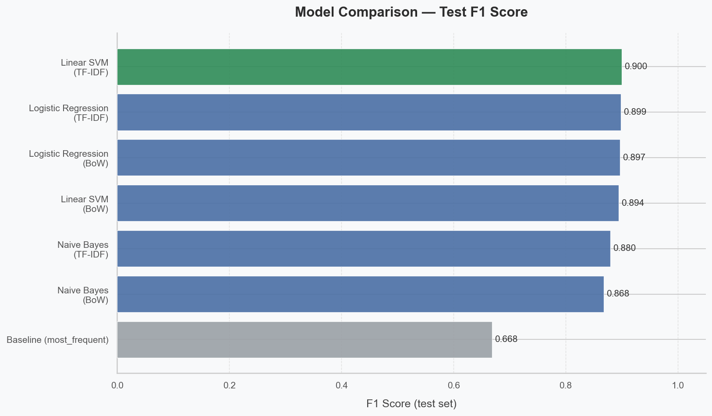
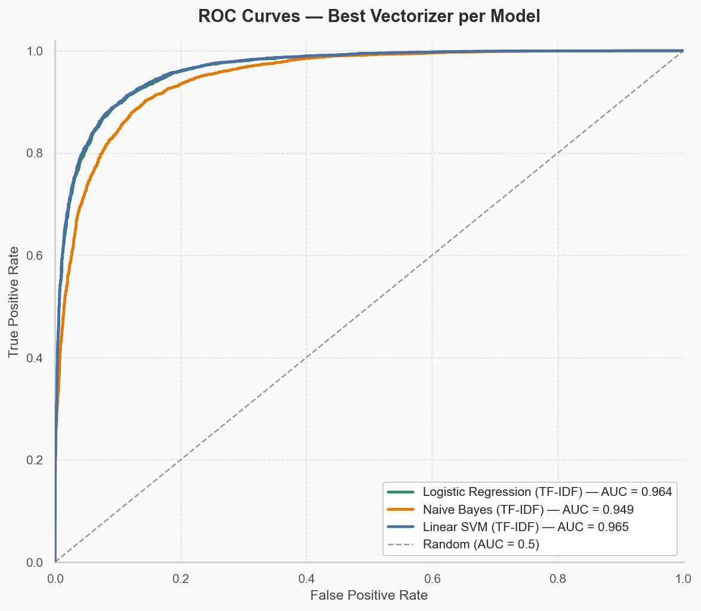
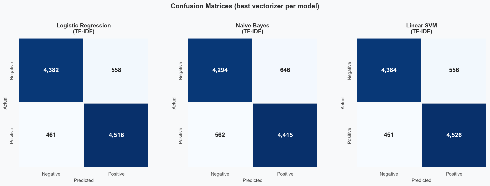
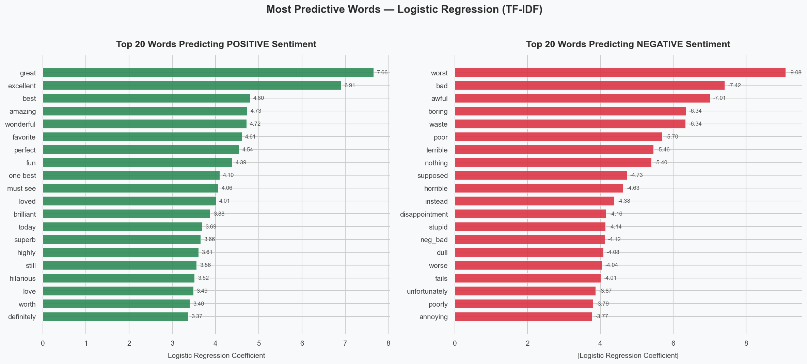
Linear SVM with TF-IDF features wins, but only by hundredths of a point over Logistic Regression. With near-identical performance, Logistic Regression is arguably the better practical choice for a quality-control system because its coefficients are directly interpretable: every prediction can be explained in terms of which words pushed it positive or negative. The top-features figure shows exactly this — words like excellent, wonderful, superb push reviews toward positive; worst, awful, boring push them toward negative. The negation-tagging pre-processing step pays off here: tokens like NEG_good appear among the strongest negative predictors, meaning the model correctly learned that "not good" is negative.
All four ML configurations crush the most-frequent-class baseline by ~22–23 F1 points, with the best system ~40 percentage points ahead on accuracy. Reliability is therefore not in question. The answer to RQ1 is yes — and the path forward in production would be Logistic Regression with TF-IDF for its trustworthy decisions.
Is there a statistically significant correlation between review length (word count) and sentiment polarity, indicating whether dissatisfied viewers write more exhaustive reviews?
We run three correlation tests, each appropriate for a slightly different assumption about the data: Pearson (linear), Spearman (rank/monotonic), and point-biserial (textbook test for continuous vs. binary). We add a Mann–Whitney U test to ask whether the entire length distribution differs between the positive and negative groups. Finally we train a single-feature Logistic Regression using only word_count — if length is informative, even this minimal model should beat chance.
| Test | Statistic | p-value | Interpretation |
|---|---|---|---|
| Pearson correlation | +0.0107 | 1.75 × 10⁻² | Linear association — practically zero |
| Spearman correlation | −0.0088 | 4.90 × 10⁻² | Monotonic association — practically zero |
| Point-biserial | +0.0107 | 1.75 × 10⁻² | Continuous vs. binary — practically zero |
| Mann–Whitney U | 3.04 × 10⁸ | 4.90 × 10⁻² | Distributions differ marginally — but medians are 171 vs. 173 |
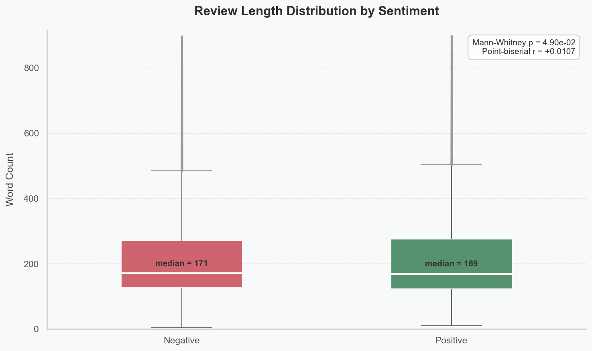
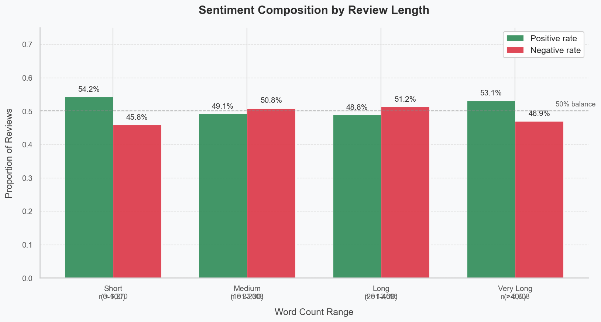
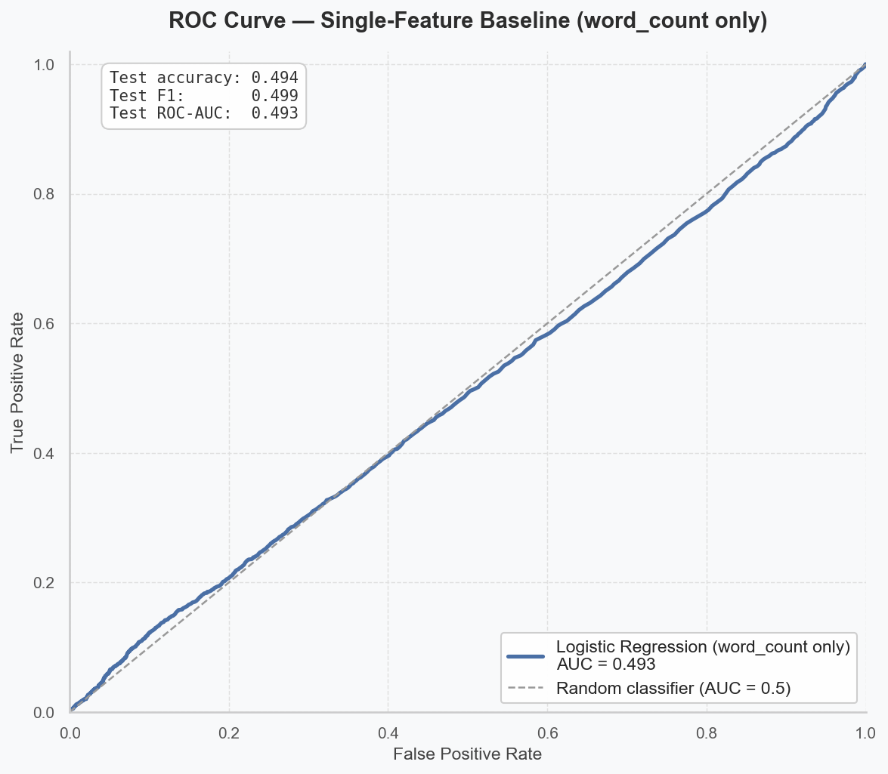
With 49,582 observations, even a correlation of r = 0.01 registers as statistically significant (p < 0.05). But |r| ≈ 0.01 means review length explains roughly 0.01% of the variance in sentiment. The Mann–Whitney test technically rejects equal distributions — yet positive and negative medians differ by just 2 words out of ~170. These are large-sample artifacts, not real effects.
The cleanest single piece of evidence comes from the length-only classifier: 49.41% accuracy is worse than the most-frequent-class baseline (50.19%). Review length carries essentially no information about sentiment. The bin-by-bin analysis tells the same story — even very long (>400 word) reviews are ~53% positive, not the "angry rant" pattern the question hypothesised. The answer to RQ2 is no: there is no practically meaningful relationship between review length and sentiment in this corpus.
Are misclassified reviews concentrated in specific structural or behavioral patterns, such as review length, use of rare words, or emotionally mixed content?
We reload the best model and vectorizer saved during RQ1 (Linear SVM + TF-IDF), reproduce the identical test split via the same random seed, and label every test review as TP / TN / FP / FN. For each review we then compute six features that group naturally:
| Feature | TP (n=4,526) | TN (n=4,384) | FP (n=556) | FN (n=451) | Wrong vs. Correct |
|---|---|---|---|---|---|
| word_count | 230.5 | 226.2 | 227.6 | 228.7 | −0.1% |
| lexical_diversity | 0.643 | 0.649 | 0.646 | 0.641 | −0.4% |
| exclamation_count | 0.98 | 1.05 | 0.69 | 1.01 | −17.8% |
| all_caps_count | 1.46 | 1.89 | 1.85 | 1.77 | +8.7% |
| rare_word_ratio | 0.0054 | 0.0047 | 0.0065 | 0.0061 | +25.0% |
| mixed_sentiment_score | 0.126 | 0.236 | 0.183 | 0.236 | +14.8% |
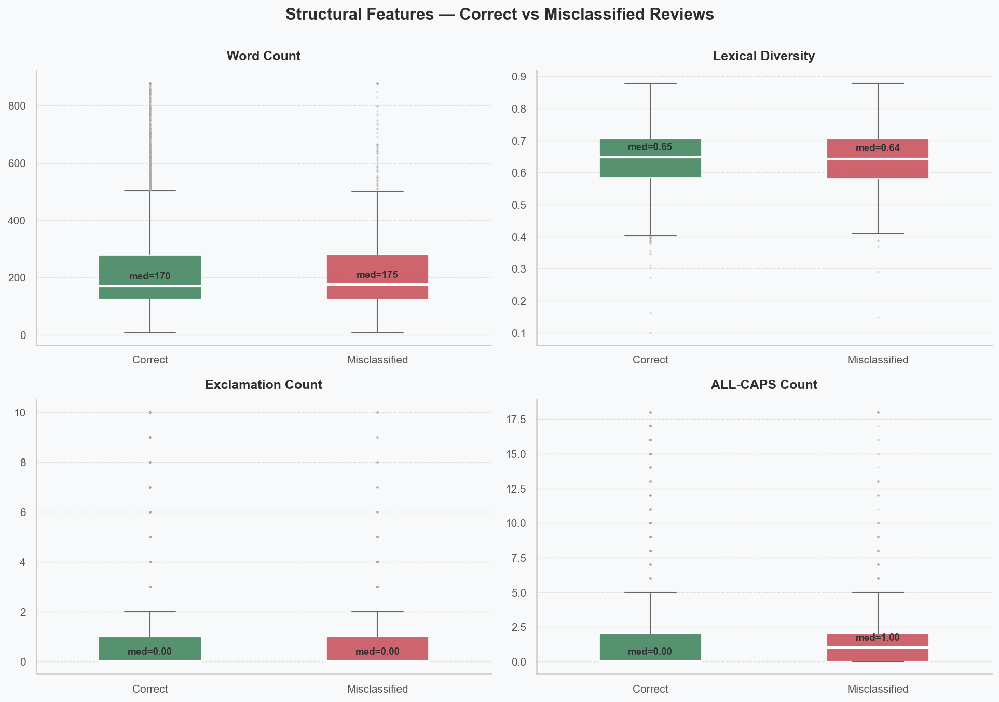
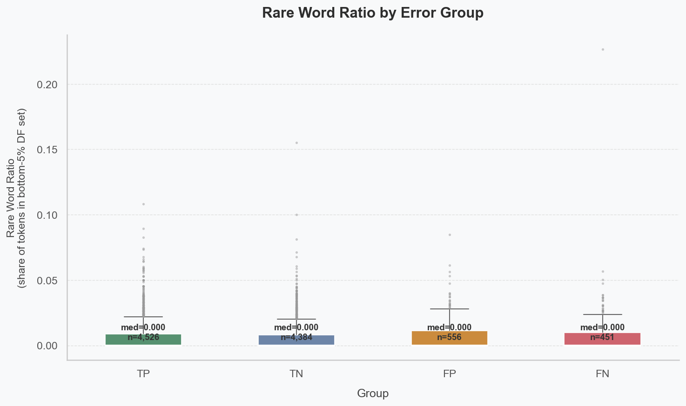
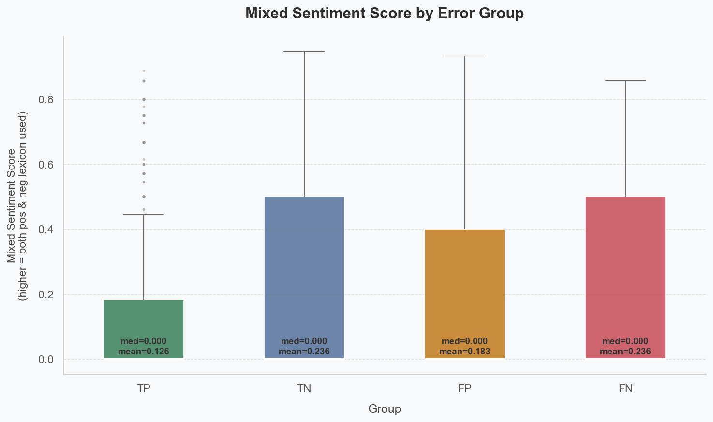
Two behavioral signals stand out, while every structural signal is essentially noise:
Misclassified reviews contain roughly 25% more tokens that the model rarely saw during training. When the bag-of-words representation cannot anchor a prediction on familiar words, the linear classifier extrapolates poorly — a known limitation of shallow text representations.
Misclassified reviews score ~15% higher on a metric of co-occurring top-positive and top-negative words. The model struggles most when a review actively balances praise and criticism — exactly the kind of "I loved the cinematography but the script was terrible" review that a bag-of-words classifier cannot resolve without word ordering or context.
Notably, true negatives and false negatives have identical mixed-sentiment scores (0.236). Negative reviews are inherently more lexically mixed than positive ones (people criticise specifically — they call out what didn't work — while positive reviews tend to be more uniformly enthusiastic). When other cues are strong, the model still gets the negatives right; when they aren't, the mixed language flips it. Structural features (length, lexical diversity, ALL-CAPS) don't separate correct from incorrect at all, reinforcing the RQ2 finding that surface-level structure is uninformative.
The answer to RQ3 is yes: errors are not random — they concentrate in rare-vocabulary and emotionally-ambiguous reviews. A useful next step would be a context-aware model (e.g. a transformer) that can read sentences instead of bags of words.
Bringing the three research questions together: what we learned, what the model still cannot do, and where this study should be taken next.
Linear SVM + TF-IDF achieves ~90% accuracy and 0.96 ROC-AUC on a balanced 9,917-review test set. For a first-stage quality-control system, this performance is comfortably actionable.
Logistic Regression performs within 0.13 F1 points of the winning SVM and exposes its decisions as per-word coefficients — a critical advantage for any system whose outputs must be auditable.
With ~50K samples, even meaningless effects appear "statistically significant". Practical significance is what matters — and length, by every test we ran, has none.
Rare vocabulary and mixed sentiment account for most errors. These are precisely the cases where a bag-of-words representation discards the contextual information needed to resolve the review.
The IMDB corpus is a balanced, English-only, polarised benchmark. Generalising to neutral reviews, other languages, or domains beyond film would require dedicated evaluation.
A transformer-based model (e.g. DistilBERT) would likely close most of the residual ~10% error gap by reading reviews in context rather than as isolated tokens. The trade-off is a substantial drop in interpretability.
Clone the repo, install dependencies, place the dataset, and run six scripts in order. All paths are relative — no manual edits required. Every figure on this site regenerates from these scripts.
Every script resolves its paths relative to PROJECT_ROOT = Path(__file__).resolve().parent.parent, so the pipeline works identically whether you invoke it from the repo root or from anywhere else. Random seeds are fixed (random_state=42) across the train/test split and every model — re-running on the same machine reproduces every number on this site.
All source code, data instructions, scripts, generated visuals and saved model artifacts live in the project repository: github.com/BILGI-IE-423/ie423-2025-2026-termproject-hungrymachines_42 ↗